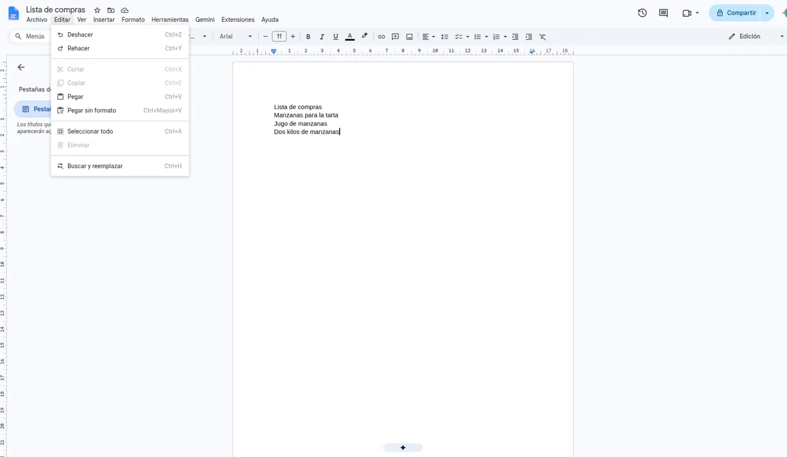
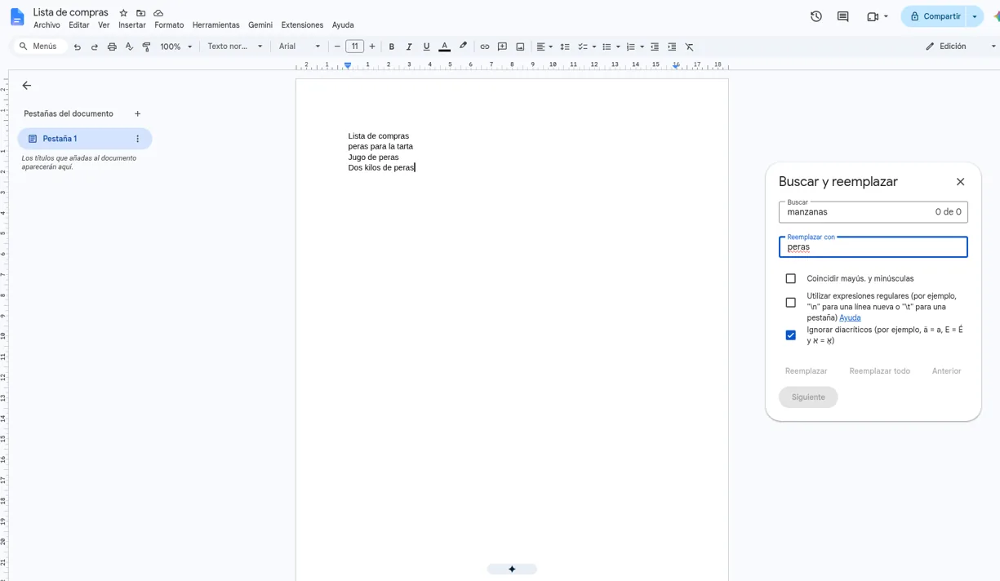
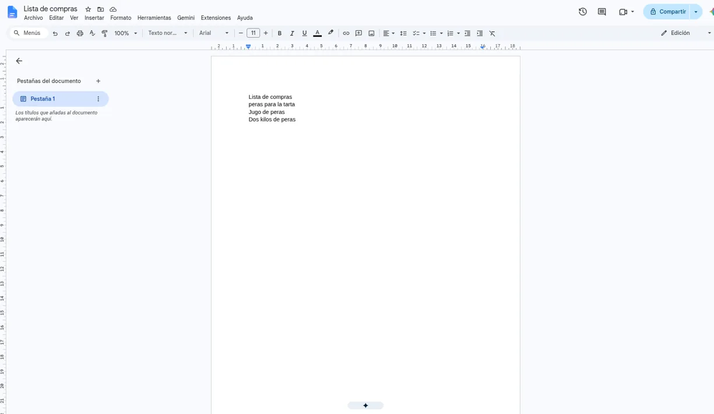

Curso de Google Documentos › Editar › Lección 12
Lección 12 de 53 · menú Editar
Cómo buscar y reemplazar una palabra en Google Docs (3 pasos)
Fecha del video: · Programado
¿Escribiste la misma palabra muchas veces y querés cambiarla? En Documentos de Google la cambiás en todo el documento de una sola vez, en 3 pasos.
En el ejemplo, la lista de compras dice «manzanas» tres veces y la vamos a cambiar por «peras».
Paso 1: Editar → Buscar y reemplazar
Abrí el menú Editar y elegí «Buscar y reemplazar». También podés usar el atajo Ctrl + H.

Paso 2: escribí la palabra vieja y la nueva
En el campo «Buscar» escribí la palabra que querés cambiar y en «Reemplazar con», la nueva. Docs resalta en verde las coincidencias y muestra cuántas encontró (en el ejemplo, «1 de 3»).

Paso 3: tocá «Reemplazar todo»
Tocá «Reemplazar todo». Se cambian todas las coincidencias a la vez y el contador queda en «0 de 0», o sea, ya no queda ninguna.


Tip: si querés revisar una por una, usá «Reemplazar» y «Siguiente» en lugar de «Reemplazar todo». La casilla «Coincidir mayús. y minúsculas» sirve para distinguir «Manzanas» de «manzanas».
Mirá el Short
Estreno del Short: 19/11/2026 · 09:00 (hora Argentina)
Fuente oficial: Ayuda de Editores de Documentos de Google. Capturas propias en un documento de ejemplo («Lista de compras»). El video usa voz generada con IA.